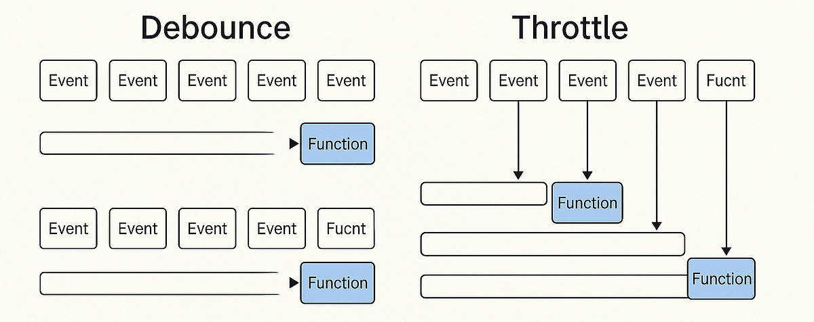
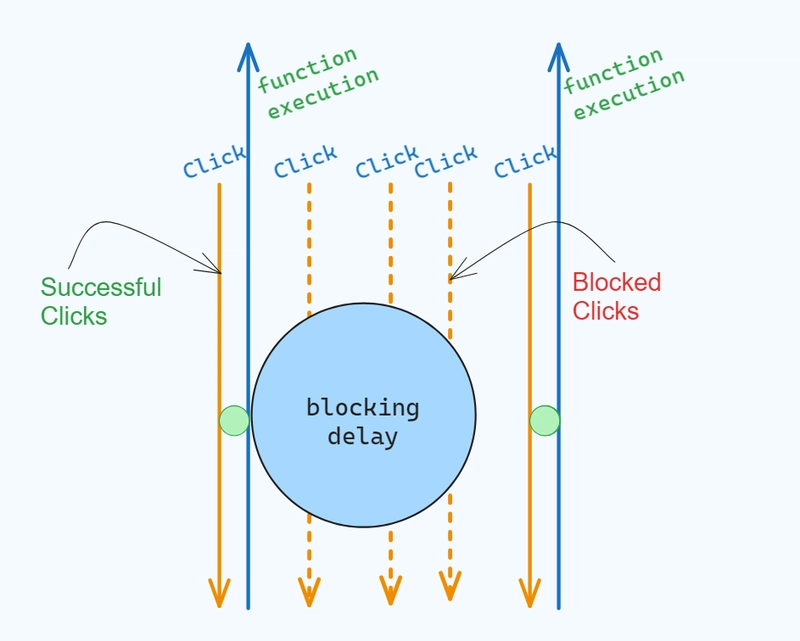

Debounce vs. Throttle: A Practical Guide
In the world of JavaScript performance optimization, two terms come up constantly when dealing with frequently firing events: "debounce" and "throttle". Both are higher-order functions that wrap an event handler to control its execution rate, but they solve fundamentally different problems. Using the wrong one can lead to a sluggish, unresponsive, or buggy user experience. This guide will provide a deep, practical understanding of each.
What is Debounce? The "Wait and See" Approach
Debouncing enforces that a function will not be called again until a certain amount of time has passed *without it being called*. It's a pattern that waits for a pause in the storm of events before taking action. It only cares about the final invocation.
A Better Analogy: The Autocomplete Search Bar
Imagine typing "javascript" into a search bar that fetches suggestions from an API. You wouldn't want to fire an API request for "j", then "ja", then "jav", and so on. That's incredibly inefficient. Instead, you want to wait until the user has paused typing. A debounced function will reset its timer with every keystroke. Only when the user stops typing for, say, 300 milliseconds, will the function finally execute with the complete term "javascript".
A Complete Debounce Implementation
A good debounce function handles passing arguments and the `this` context correctly from the wrapped function.
/**
* Creates a debounced function that delays invoking `func` until after `delay`
* milliseconds have elapsed since the last time the debounced function was invoked.
* @param {Function} func The function to debounce.
* @param {number} delay The number of milliseconds to delay.
* @returns {Function} Returns the new debounced function.
*/
function debounce(func, delay) {
let timeoutId;
// The returned function is what gets called on every event
return function(...args) {
// `this` and `args` are preserved from the original call
const context = this;
// Clear the previous timeout to reset the waiting period
clearTimeout(timeoutId);
// Set a new timeout
timeoutId = setTimeout(() => {
// When the timeout completes, call the original function
func.apply(context, args);
}, delay);
};
}What is Throttle? The "Rate Limiter" Approach
Throttling enforces a maximum number of times a function can be called over a period of time. It doesn't wait for a pause; it just says, "No matter how much you ask, I will only execute at most once every X milliseconds." It guarantees a regular, predictable execution rate.
A Better Analogy: A Video Game Action
Imagine playing a video game where you can shoot a laser. If you could fire the laser every time the game's loop runs (60 times per second), it would be overpowering. Instead, the game developers *throttle* your ability to shoot. Even if you hold down the fire button, the laser only fires, say, once every 500 milliseconds. It ensures a consistent rate of fire while still responding to your continuous action.
A Complete Throttle Implementation
This implementation ensures the function runs at the specified interval without queuing up calls.
/**
* Creates a throttled function that only invokes `func` at most once per
* every `limit` milliseconds.
* @param {Function} func The function to throttle.
* @param {number} limit The number of milliseconds to throttle executions to.
* @returns {Function} Returns the new throttled function.
*/
function throttle(func, limit) {
let inThrottle;
let lastResult;
return function(...args) {
const context = this;
if (!inThrottle) {
inThrottle = true;
setTimeout(() => {
inThrottle = false;
}, limit);
lastResult = func.apply(context, args);
}
return lastResult;
};
}Debounce vs. Throttle: Head-to-Head Comparison
The simplest way to remember the difference: Debounce groups a burst of events into one. Throttle guarantees a steady flow of executions during a burst of events.
Here's a table to help solidify the concepts:
| Feature | Debounce | Throttle |
|---|---|---|
| Primary Goal | Execute only after a period of inactivity. | Execute at a maximum controlled rate. |
| Guarantees | Guarantees a rest period before execution. | Guarantees a minimum time between executions. |
| Common Use Cases | Search bar suggestions, window resizing, form validation. | Scroll events, mouse tracking, game loops. |
| Event Handling | Ignores all intermediate events in a series. | Fires on the leading edge and then at regular intervals. |
Conclusion: Choosing the Right Tool for the Job
The choice between debounce and throttle is not about which is "better," but which is appropriate for the task. Your decision should be driven by the desired user experience. Do you need to react to a single, final action, or do you need to provide continuous feedback for an ongoing action? Answering that question will tell you whether you need to debounce or throttle your event handlers, leading to a more performant and intuitive application.